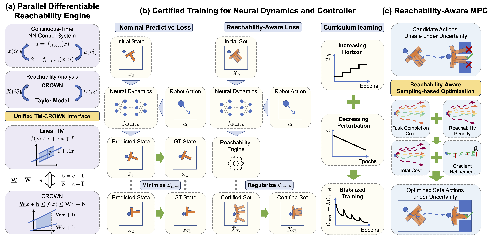

Our work aims to make certified reachability practical for modern robot learning and online planning with neural dynamics and controllers. Existing reachability tools are primarily designed for offline verification and are often non-differentiable, computationally inefficient, or overly conservative for direct integration into modern learning and online planning pipelines. Our main contributions are:
Our framework turns reachability analysis into a differentiable, GPU-parallel primitive that can be used directly inside robot learning and online planning.
The core engine combines Taylor-model flowpipes for system dynamics with CROWN-based verification for neural components through a unified TM-CROWN interface. This allows certified reachable sets to be propagated through analytical dynamics, neural dynamics, and neural controllers while preserving useful dependency information.
The same engine is used in two downstream pipelines. During certified training, reachable-set penalties regularize neural dynamics and controllers so that uncertainty remains compact over long horizons. During reachability-aware MPC, candidate action sequences are evaluated by both task cost and reachable-set penalties, enabling robust online planning under bounded uncertainty.

@inproceedings{shen2026diffreach,
title={Parallel Differentiable Reachability for Learning and Planning with Certified Neural Dynamics and Controllers},
author={Keyi Shen and Glen Chou},
booktitle={Proceedings of Robotics: Science and Systems (RSS)},
year={2026}
}